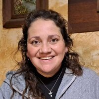

Curriculum Vitae

Isabel Andrea Urrutia Avendaño
Resumen
Me he dedicado durante 15 años a la docencia y gestión en diferentes instituciones de educación superior, dictando clases principalmente de Informática Educativa, metodologías activas y matemáticas en pre grado, post grado, capacitación docente y diplomados. En cuanto a la gestión me he desempeñado desde la coordinación de carreras a la dirección de escuela y también en dirección de educación virtual. Me apasiona acompañar a mis estudiantes durante su proceso formativo.
Datos Personales
- Nombre: Isabel Urrutia Avendaño
- Ciudad: Santiago
- Teléfono: +56 9 54247956
- Correo electrónico: profesora.isabel.u.a@gmail.com
Formación Profesional
- Profesora de Educación Media en Matemáticas e Informática Educativa, Universidad Católica Silva Henríquez
- Magister en Educación con mención en Informática Educativa, Universidad de Chile
- Diploma Universitario en diseño didáctico instruccional para e-learning, tecnología educativa, Netlearning
- Diplomado en e-learning con moodle y recursos open source, Netlearning
- Diploma en habilidades para gamificar el aula, Universidad de Chile
Experiencia Laboral
- [2015-2023]Docente de Informática Educativa, Matemáticas y Metodologías Activas, UCSH
- [2017-2022]Docente de Informática Educativa, Matemáticas y Metodologías Activas, UGM
- [2017-2022]Coordinadora de tecnología Educativa, luego Directora de Educación Virtual, Directora de Escuela de Educación, UGM
- [2009-2016]Docente de Informática Educativa y Matemáticas, UCINF
- [2012-2016]Secretaria de Estudios, luego coordinadora de licenciaturas online y luego Directora de Educación Virtual, UCINF
- [2014]Docente de Informática Educativa, diplomado, UST
- [2014-2015]Docente de Informática Educativa y Matemáticas, IPP
- [2010-2011]Docente capacitador, creador de cursos y contenido pedagógico, GRYMAC
A continuación, puedes revisar mi portafolio y linkedin:
Portafolio
Ver linkedin